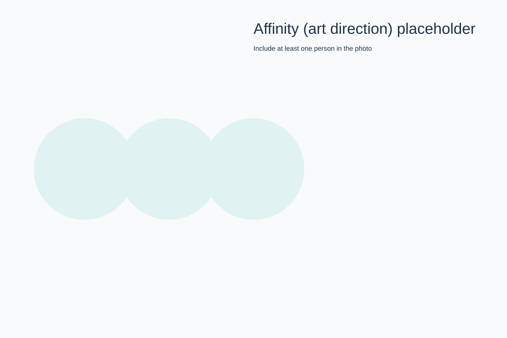
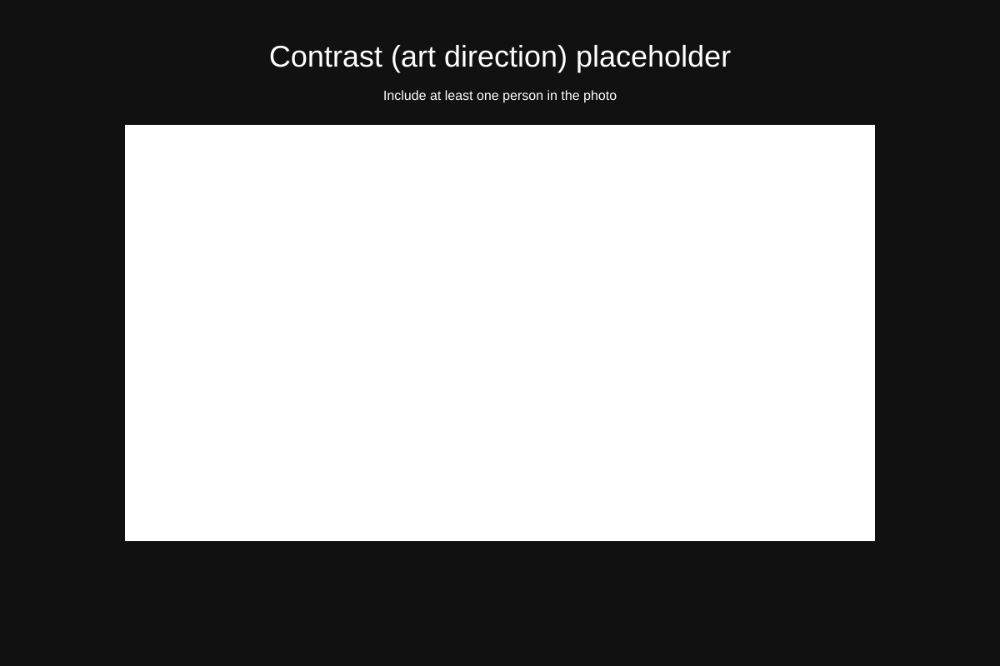
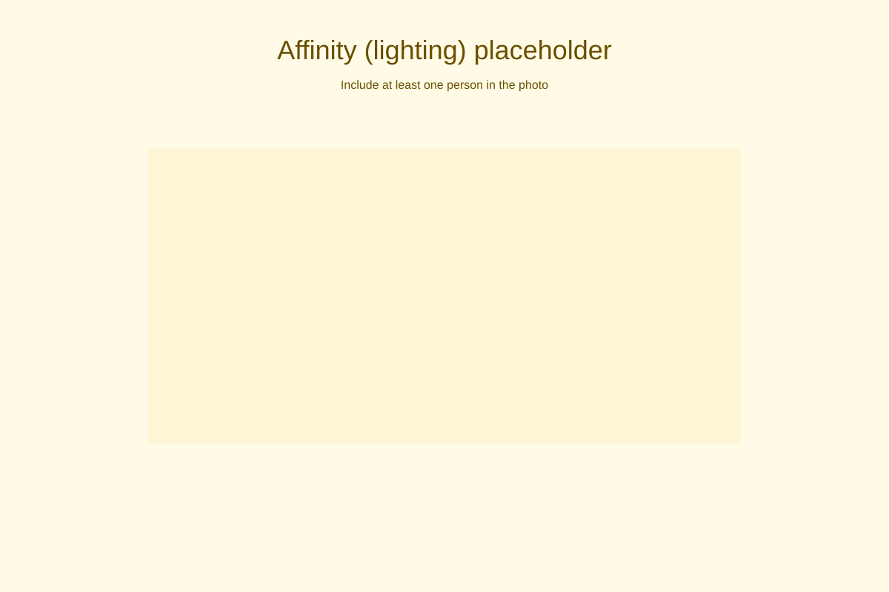
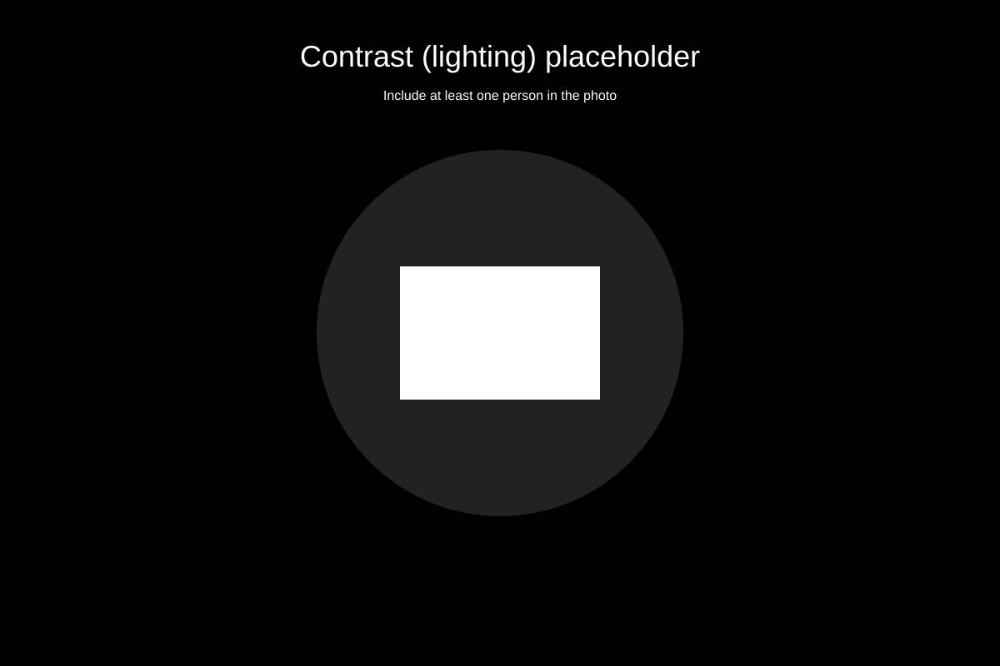
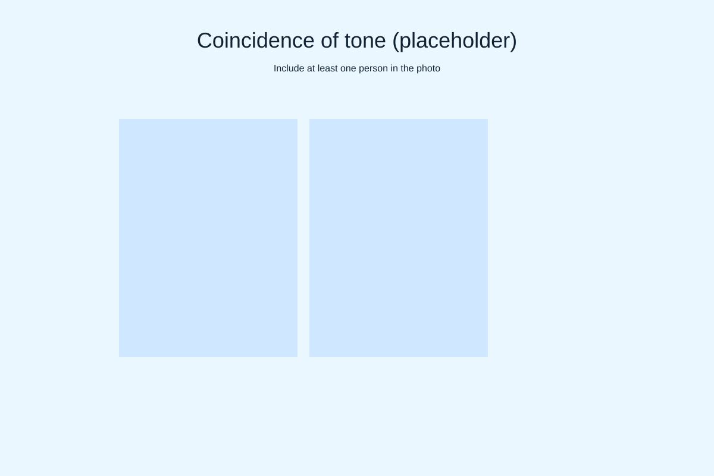
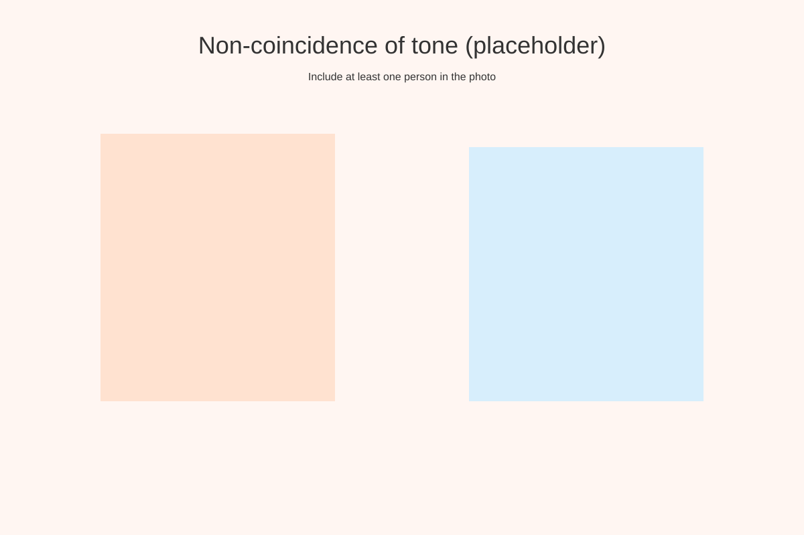

Response 5 - Assignment: Tone
This page contains six image slots (placeholders). Replace each placeholder with an original photo that includes at least one person. Present images in the order below and label them.
1. Affinity of tone (art direction)

2. Contrast of tone (art direction)

3. Affinity of tone (lighting)

4. Contrast of tone (lighting)

5. Coincidence of tone

6. Non-coincidence of tone

Submission notes
Replace placeholders with your original photos (unique images only). Add short captions explaining how each image demonstrates the required tone condition and confirm a person appears in each frame. Publish the page and share the direct link for submission.